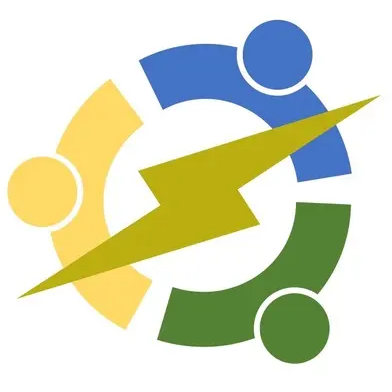

Welcome to the FAIR-Battery Project

Welcome to the FAIR-Battery project!
On this website, we will provide a detailed explanation on how to make your own electro chemical battery!
But what is the FAIR-Battery project?
We aim to create an open-source electrochemical battery (FAIR = Findable + Accessible + Interoperable + Reproducible). A large community of people, from all over the world, are responsible for the work you will see while navigating this website. These people had the following vision of what this project was meant to be.
Project pillars
In our vision, to create a truly accessible FAIR-Battery, we need to form a community, at the same time that we collect and share the technical knowledge necessary for making and maintaining an operational device. Therefore, we are building our activities on three pillars
1- Learning together
In this interdisciplinary project, we identify the barriers to developing a truly FAIR-battery and envision the first steps to removing some of these barriers.
In particular, we look for the answers to these questions: - What range of energy storage capacities are required for the development of typical user groups and at what cost? - Which battery technologies can potentially address these demands? - Are the materials and technologies required for adopting the identified technologies available in the identified user groups? If not, which adjustments are needed? - What is the missing know-how and expertise for kick-starting the local development of pilot projects? - How to set up a distributed manufacturing and maintenance infrastructure for electricity storage?
2- Battery Hardware
As of April 2024, we have produced and tested an initial battery design with a geometric cell area of 1cm^2 with the possibility to scale up to 10 cm^2.
More detailed documentation and files can be found here
The current battery design has been tested using a MYSTAT, a small open-source potentiostat.
3- Coordination and Maintenance
A standard procedure for testing FAIR-Batteries is currently being developed. The main purpose of this standardization is to make results from different contributing groups easy to compare. In order to achieve this, both software and hardware has been developed to fit the testing needs of redox-flow batteries.
FAIR-Battery is meant to be:
- Open-source: all designs and data that is useful for further development will be shared.
- Scalable: both small and medium scale installations are supported and considered in new designs.
- Versatile: alternative chemistries or material resources will be accommodated as much as possible.
Main Contributors
- Daniel Fernandez Pinto, PhD.
- Kirk Smith, PhD.
- Prof. Sanli Faez.
- Joshua Hauser.